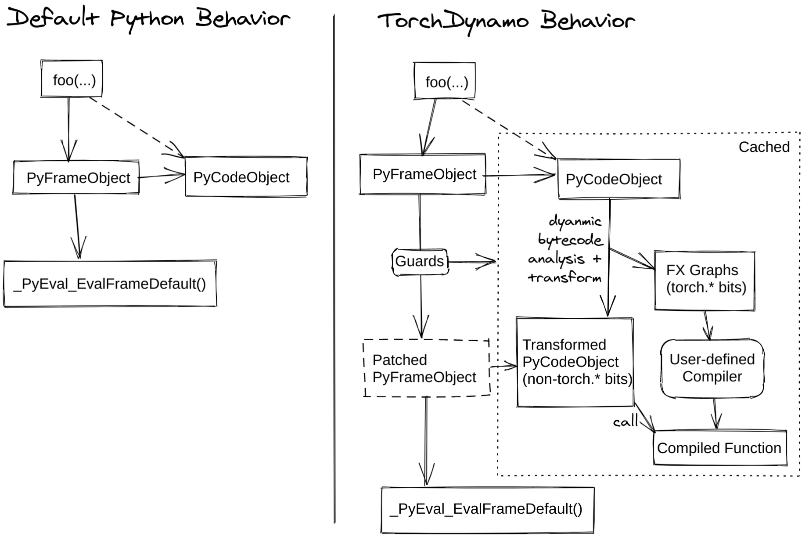

In the last post, we saw how torch.fx turns python code into a graph using symbolic tracing with proxy objects.
TorchDynamo on the other hand, is a JIT compiler that operates at the python bytecode level, captures a computation graph and hands it to a backend for further optimization.
In this post we will pay attention to how dynamo works and how its different from symbolic tracing.
What Makes Dynamo Different
Dynamo is a tracer that given a function and its inputs, executes the function and records a linear sequence of instructions (without control flow) into a graph. Unlike FX's symbolic tracing which uses Proxy objects, Dynamo works by simulating the python virtual machine at the bytecode level.
python Bytecode
Before we can understand Dynamo, we need to understand how python actually runs code. python compiles functions into bytecode which is a sequence of low-level instructions for the python virtual machine (PVM).
When a function is called, python creates a frame that stores -
- the bytecode instructions
- local variables
- global variables
- the evaluation stack
- the block stack
The PVM maintains three stacks -
| Stack | Purpose |
|---|---|
| Call stack | Tracks which functions are being called. When foo() calls bar(), a new frame for bar is pushed on top. |
| Evaluation stack | Where intermediate values live. a + b becomes: push a, push b |
| Block stack | Tracks nested control structures (loops, try/except, with). Tells the VM what to do on break or continue. |
With that out of the way, let's see how dynamo actually captures the graph.
How Dynamo Captures the Graph

This diagram is the key idea behind Dynamo. Normally when you call a function, python creates a frame and hands it directly to the PVM for execution. Dynamo hooks into this process and right before the PVM is able to execute the frame, it gets a chance to inspect it. The frame contains the function's bytecode, local variables, and evaluation stack. So now instead of immediately letting python execute the bytecode, dynamo walks through each instructions and maintains a symbolic version of the evaluation stack and records tensor operations into an FX Graph.
Here's how I would visualize this -
- Dynamo intercepts the frame of the function being called.
- It steps through each bytecode instruction, simulating the evaluation stack with FX Proxy values
- When it encounters a tensor operation, it records a new FX node.
- When it encounters something it can't capture, it creates a graph break basically it halts and lets the PVM run the unsupported op and then resumes tracing.
- At the end, you have a complete FX Graph or multiple graphs depending on if you hit a graph break or not.
You can already see how this technique of using the bytecode might be able to handle more scenarios compared to simply trying to symbolic trace like fx tracer.
Guards
Now after Dynamo captures the computation graph, it is usually handed off to the inductor where the lowering and optimization happens.
Now that we have a graph captured, can I keep reusing this or at what point does this graph become useless and I have to retrace this?
Guards are super handy dandy that help you do this. A guard is a function that checks whether the input properties of the compiled function have changed. If the guards pass, the cached compiled graph is reused. If they fail, the function is recompiled.
import torch
@torch.compile(backend=my_reallycoolcompilerhehe)
def foo(x, y):
return (x + y) * x
foo(torch.randn(10), torch.ones(10)) # first compilation
foo(torch.randn(10), torch.ones(10)) # same shapes, no dont recompile
foo(torch.randn(20), torch.ones(20)) # shapes change, recompile
foo(torch.randn(10, dtype=torch.float64), torch.ones(10, dtype=torch.float64)) # dtype change, recompile
foo(torch.randn(10, device="cuda"), torch.ones(10, device="cuda")) # device change, recompile
There is a limit to how many times a function can be recompiled. If either limit is exceeded, then we will not attempt to compile the function again and instead will run the function eagerly.
Usually a change in all the tensor properties like dtype, device, shape etc will always cause recompilation.
Graph Breaks
When dynamo encounters an operator it cannot support, it creates a graph break splitting the computation graph into several subgraphs that it can support, and returning control to the python interpreter to execute the unsupported operator.
def foo(x):
x = torch.relu(x) # captured
print("hello") # graph break! can't capture print()
x = torch.neg(x) # captured in a second subgraph
return xHere is what happens under the hood:
- Dynamo traces through
torch.relu(x)records FX node. - Encounters
print("hello")cannot capture this in the graph. - Dynamo stops tracing, compiles subgraph 1 (relu), executes it, gets the real tensor result.
- Hands control back to the PVM to run
print("hello")with real values. - Resumes tracing from the next instruction and captures subgraph 2 (neg).
Graph breaks are in general expensive but it also depends on where the graph break is occurring. Every break in the graph means dynamo must halt and hand control over to the interpreter and let it do its thing before it returns the control back. This to-and-fro is usually where the slowdown happens and you need to be very careful to minimize graph breaks.
Common causes of graph breaks -
- Control flow dependent on tensor data (e.g.,
if x.sum() > 0) - python operations that cannot be represented in an FX Graph (e.g.,
print(), file I/O, sockets, etc.)
Wrapping Up
In the next post, we will look at AOT Autograd and how Dynamo's captured graph gets turned into a backward pass and lowered to the backend compiler.